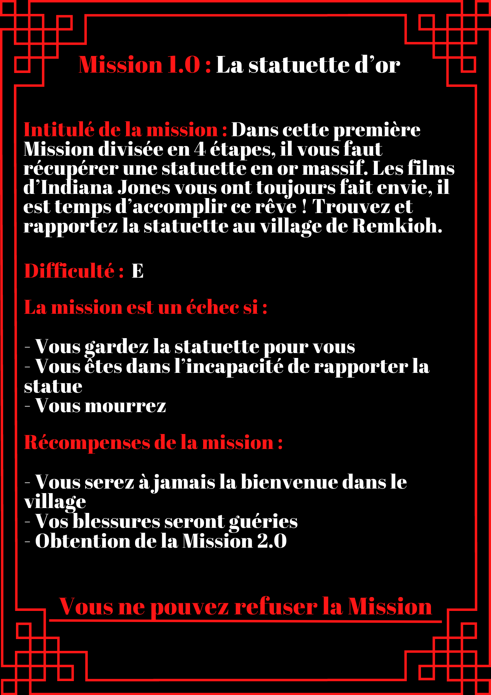

Il nous fallut encore une demi-heure pour atteindre le village et je sentais mes muscles crier grâce. J’aurais dû faire plus d’exercices…
Elle claqua des doigts et ledit panneau apparut devant mes yeux. Surpris, je reculais d’un pas et trébuchais sur une pierre. Je m’étalais par terre.
...
Je vais mourir avant la fin de la première mission.
Je me relevais et observa ce panneau de plus près. J'avançais ma main mais au moment où j'allais le toucher, sa surface ondula comme de l'eau et je vis que mes doigts étaient passés au travers.
Etrange.
Je me reculais et relis cet… ordre de mission. Rien n’a changé. Mais je ne comprends pas pourquoi je garderais la statuette pour moi…
Ma guide s’était figée et murmurait d’étranges paroles dans une langue que je ne connaissais pas. Des chiffres défilèrent dans ses pupilles et
je reculais d’un pas. Qu’est-ce qui lui arrive ?
Ses yeux retrouvèrent leur lucidité et elle se tourna vers moi.
Son annonce me fit un nouveau choc. J’avais presque oublié… Si je ne réussis pas, moi aussi je deviendrais l’instrument de ce Modérateur.
Bon, j'imagine que ça devrait aller non ?